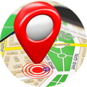

<!DOCTYPE html>
<html>
  <head>
     <title>Geolocalizate. Tu latitud y longitud</title>
      <meta http-equiv="content-type" content="text/html; charset=utf-8" />

      <script type="text/javascript">

        if (navigator.geolocation) {   //Check if browser supports W3C Geolocation API
           navigator.geolocation.getCurrentPosition(successFunction, errorFunction);
        } else {  alert('Esta pagina no soporta Geolocalizacion.'); }

        function successFunction(position) {
           var lat = position.coords.latitude;
           var lon = position.coords.longitude;
           //alert('Tu latitud es :'+lat+' y tu longitud es '+lon);
           document.writeln("<center></center>");
           document.writeln("<br>");
           document.writeln("<br>");
           document.writeln("<center>");
           document.writeln('Tu latitud es :'+lat+'');
           document.writeln("<br>");
           document.writeln(' y tu longitud es '+lon);
           document.writeln("<br>");
           document.writeln("<br>");
           document.writeln("<a href='index.html'>Inicio</a> <a href='mapa.html'>Mapa de ubicacion</a>");
           document.writeln("</center>");
        }

        function errorFunction(position) {    alert('Error!');   }
     </script>

  </head>
  <body>
     <p>
       
     </p>
  </body>
</html>